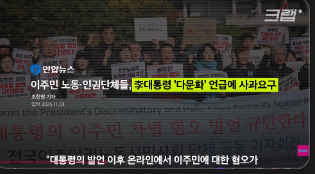
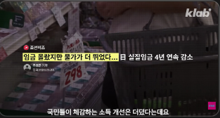
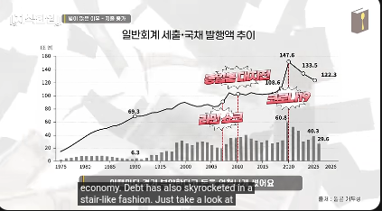
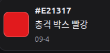

✨ ① 키워드 강조 자막 기본 자막
레코체 흰 글자 + 검정 외곽선, 배경 없음. 하단 타이핑 → 0.40초 핵심어 하나만 형광펜(왼→오) → 0.45초 반짝 + 효과음 11(-20dB).
⚔️ ② VS 비교
좌·우 카드는 흑백 반투명(뒤 영상이 비침, 빨강/파랑 판 없음). 가운데 VS만 #E21317. 0.00 카드 휙(21) → 0.25 충돌 금속음(23)+플래시 → 0.30 VS 스탬프 → 0.80 비교 항목.
📈 ③ 통계 그래프
참고 사진 3번처럼 막대 + 꺾은선, 지점 숫자 라벨, 사건은 손글씨 주석. 회색 판 없이 영상 위에 바로. [제목] + 큰 숫자 + 출처 필수. 아래 숫자는 예시(자리 표시).
📰 ④ 언론 인용 (타이핑)
참고 사진 1·2번: 언론사 로고 + 흰 띠 위 검정 굵은 헤드라인이 타이핑으로 나옴, 핵심어 노랑 형광, 기자·날짜 작게. 실제 기사 제목만 씀(아래는 예시).
🔥 ⑤ 한국이 대단하다! 참고용
외국인이 감탄하는 순간에만. 90→110→100% 팝, 강조어 하나만 빨강 + 반짝이. 문장마다 쓰지 않음.
🖌️ ⑥ 대본 한마디 평가 좌하단 · 정선아리랑뿌리체
작은 머리말(45%) + 큰 본문 56px, 먹색 #040404 + 흰 외곽선 #FBFAF8 6px, 마지막 낱말만 반전(흰 #FCFCFC + 검정 외곽선 #080404), 오른쪽 아래 검정 그림자 4.5px.
🔄 ⑦ 반전 · 그런데!
스크래치(05) 선진입 → 화면 정지 + 흑백 + 흔들림 0.25초 → 빨간 박스 #E21317 쾅 → 0.60 전환음(14). 영상 하나에 2~3번까지.
💬 ⑧ 해외 댓글
Do Hyeon, 카드 옆에서 등장(알림 29) → 원문 타이핑(27, -24dB) → 번역 + 핵심어 형광 #73F282 → 좋아요 수. 실제 댓글만(아래는 예시).
⚡ ⑨ 어울리는 문구 2줄 (번개)
티몬 몬소리 Black 38px · 자간 -1px · 첫 줄 55%. 흰 #FDFDFC, 핵심 명사만 빨강 #E03C3E, 외곽선·그림자 없음, 양끝 빨간 번개 #D94B50.
🏷️ ⑩ 대본 특정 문구 + 검정 라벨
티몬 몬소리 Black 38px · 자간 -1.5px · 줄 각도 -1.5° · 세로 116%. 흰 #FDFDFD, 핵심 구절 빨강 그라데이션 #E25254→#F26163, 검정 외곽선 #111114 5px + 아래 그림자 2px, 강조어 위 검정 박스 #040506 + 흰 #EFEFEF 라벨, 양옆 burst.
제작 형식 (함께 지킴)
- 컷 4초 이하 · 편당 17분 이상 × 50편 (내레이션은 이미 생성됨, 약 90%)
- 원본: 좌우반전·크롭·속도 변경
- 가림: 워터마크·플랫폼 로고 = 모자이크 · 원본 하단 자막 영역 = 블러 · 화면 안 자동 검출 글자 = 블러
- 효과음: 책장 넘김·함성 등 절제해서 · 화면 전환: 줌인/줌아웃/책장 넘김
- 댓글·언론은 타이핑 효과 · 실제 댓글/기사 없으면 지어내지 않음
- 효과음: 의문·반전 = Riser/Record stop 0.4~1초(질문 직후) · VS 전환 = Whoosh/Sword swoosh 0.3~0.9초(분할선 직전~VS 등장)
- 글씨 크기 px은 편집기 기준값 — 1920×1080 화면에선 같은 비율로 확대(시안은 ×2.5)
- TTS·렌더·게시:
제작규칙_STEP6-8.md그대로
참고 사진



